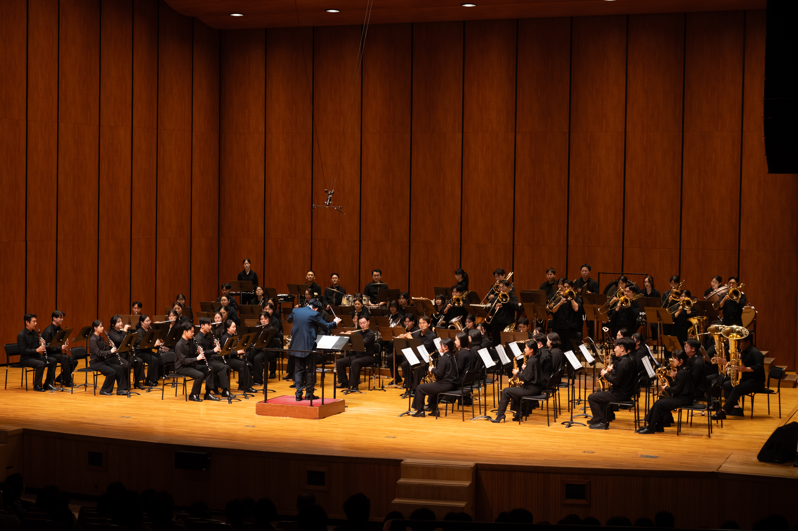
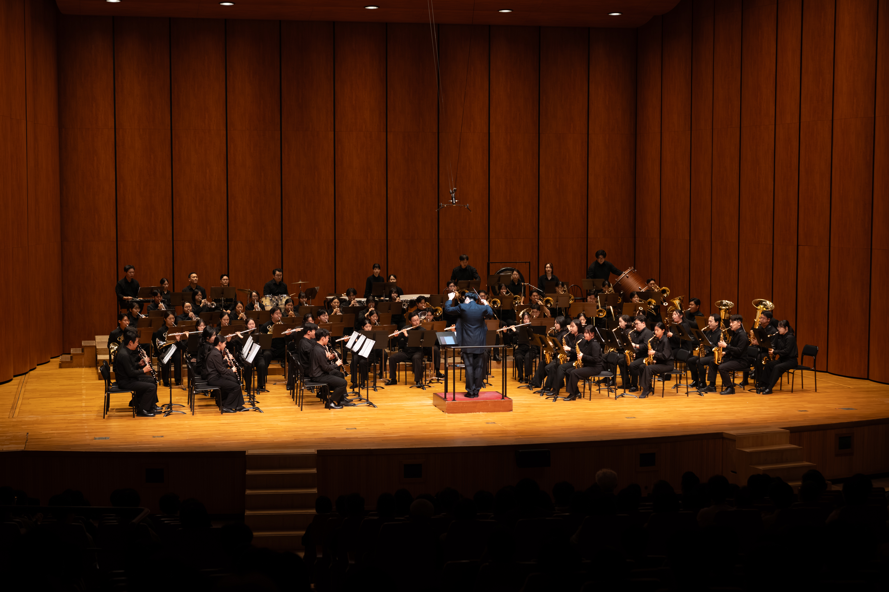
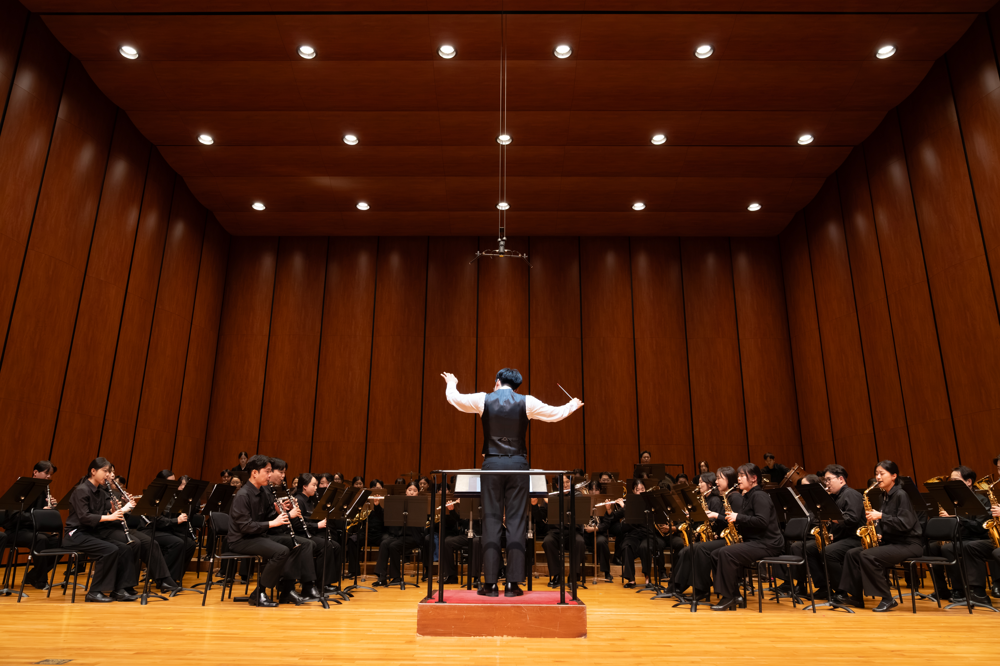

함께 만드는 음악
서로의 소리에 귀 기울이는 앙상블



NEW WORLD WIND ORCHESTRA
하나의 숨결이 모여, 마음을 잇는 음악으로.
뉴월드윈드오케스트라의
이야기가 시작됩니다.
01 / ABOUT US
음악이 있는 곳에
우리의 이야기가 있습니다.
주요 연혁
2023.06.15. 어필링마칭밴드 창단
2023.12.24. 제1회 어필링마칭밴드 정기연주회
2024.12.21. 제2회 어필링마칭밴드 정기연주회
2025.06.25. 뉴월드윈드오케스트라 단체명 변경
2025.08.17. 제49회 대한민국 관악경연대회 일반부/특별부 대상
2025.12.20. 제3회 뉴월드윈드오케스트라 정기연주회
2026.10.10. 제4회 뉴월드윈드오케스트라 정기연주회
서로의 소리에 귀 기울이는 앙상블
연주자와 관객이 함께 나누는 울림
음악과 함께 이어갈 우리의 여정
02 / GREETINGS
일상에는 성실함을, 음악에는 진심을 담습니다.
안녕하세요. 뉴월드윈드오케스트라 대표 여현석입니다. 저희의 음악에 관심을 보내주시는 여러분께 감사드립니다.
뉴월드윈드오케스트라는 부산·경남에 거주하는 청년들이 음악에 대한 열정으로 모여 함께 성장하는 단체입니다. 서로 다른 일상을 살아가지만, 음악을 향한 마음으로 한자리에 모여 서로의 소리에 귀 기울이고 하나의 하모니를 만들어갑니다.
우리는 각자의 자리에서 맡은 책임을 성실히 다하며, 음악 앞에서는 진지한 자세로 연주에 임하는 예술인이고자 합니다. 일상에서 쌓아온 성실함과 음악을 향한 진심을 매 순간의 연주에 담겠습니다.
함께 배우고 성장하며 만들어갈 뉴월드윈드오케스트라의 여정에 따뜻한 관심과 응원을 부탁드립니다. 감사합니다.
03 / CONCERTS
연주자 80명의 대규모 윈드오케스트라의 울림.
공연 포스터와
리플릿을 만나보세요.
04 / OUR MOMENTS
무대 위의 열정, 함께한 시간의 기록.
A MOMENT TO REMEMBER
일반부 / 특별부 대상뉴월드윈드오케스트라가 제49회 대한민국관악경연대회 일반부/특별부 대상을 수상했습니다.
함께 준비한 무대부터 수상의 기쁨까지,
우리의 소중한 순간을
담았습니다.
05 / GET IN TOUCH
공연 및 협업에 관한 이야기를 들려주세요.